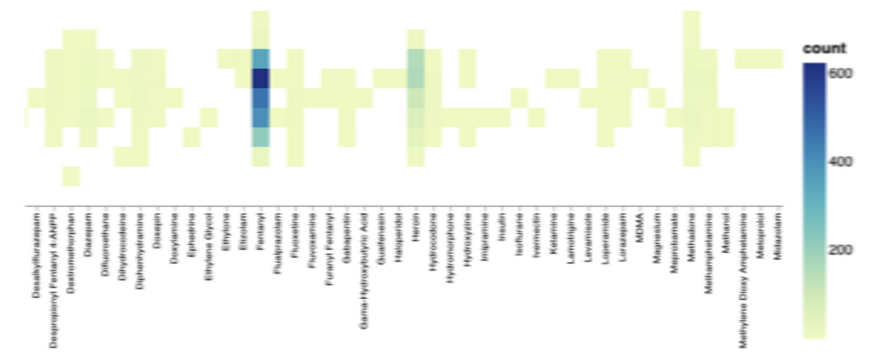

My Three Research Questions
1. How have overdose deaths changed over the years?
Why I chose this: I've heard about the "opioid crisis" in the news and wanted to see what the actual data shows about how it's changed over time.
2. Where in Allegheny County do most overdoses happen?
Why I chose this: I'm curious if overdoses happen more in certain neighborhoods, which could help target prevention programs.
3. Who is most affected by fatal overdoses?
Why I chose this: Understanding age, gender, and race patterns can help identify who needs the most help.
Data Overview
Discoveries & Insights
Question 1: How have overdose deaths changed over time?
This simple bar chart shows that overdose deaths generally increased over time, with some big jumps in certain years like 2016-2017
This chart shows how different drugs became more or less common in fatal overdoses. I grouped similar drugs together to make patterns clearer.
Question 2: Where do most overdoses happen?
This chart shows which areas of Allegheny County have the most overdose deaths. I limited it to the top 15 to focus on the most affected areas.
This heatmap visualization shows how different substances affect various geographic areas, revealing that fentanyl has become pervasive across all neighborhoods, while heroin and cocaine show more localized patterns.
Question 3: Who is most affected?
These charts show the age, sex, and race of people who died from overdoses. I made separate charts to clearly see each demographic pattern.

Different age groups show distinct substance use patterns: younger victims (18-25) more often involve prescription drugs, middle-aged groups (26-45) show highest fentanyl rates, while older adults (55+) have higher alcohol involvement.
- Age: Most victims were between 25-55 years old, with the highest numbers in their 30s and 40s
- Sex: About 3 out of 4 victims were male
- Race: Most victims were white, but the crisis affects all racial groups
Follow-up Analysis: Monthly Patterns
I wanted to see if certain times of year had more overdoses. This chart shows the total deaths for each month across all years.
Summary
The overdose crisis in Allegheny County has fundamentally transformed over the past two decades. What began as a diverse substance abuse problem evolved into a heroin epidemic and then transformed again into a synthetic opioid crisis dominated by fentanyl. This evolution demands adaptive public health responses.
Geographic concentration provides opportunities for targeted intervention. The clustering of fatal overdoses in specific neighborhoods suggests that concentrated efforts in high-impact areas could yield disproportionate benefits.
Demographic patterns reveal both persistent disparities and emerging concerns. While certain populations remain at highest risk, the broadening impact across age groups, races, and sexes indicates the need for comprehensive, inclusive approaches to prevention and treatment.